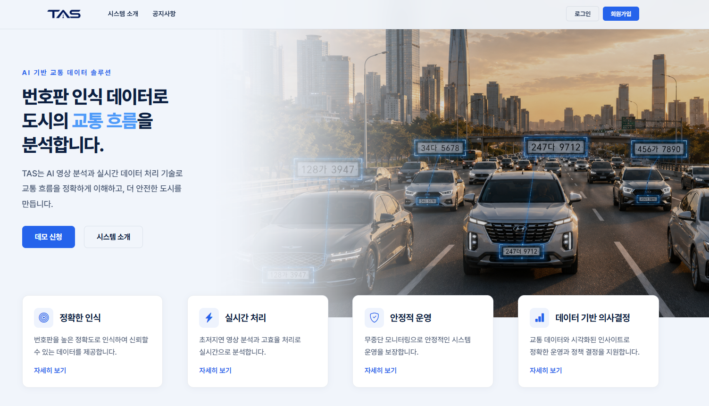
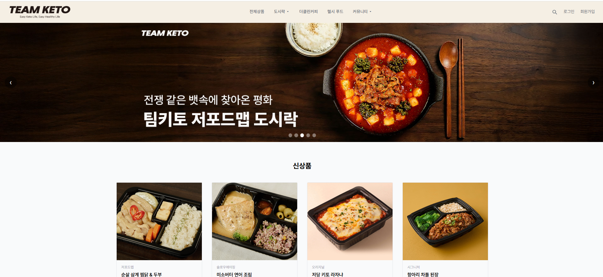
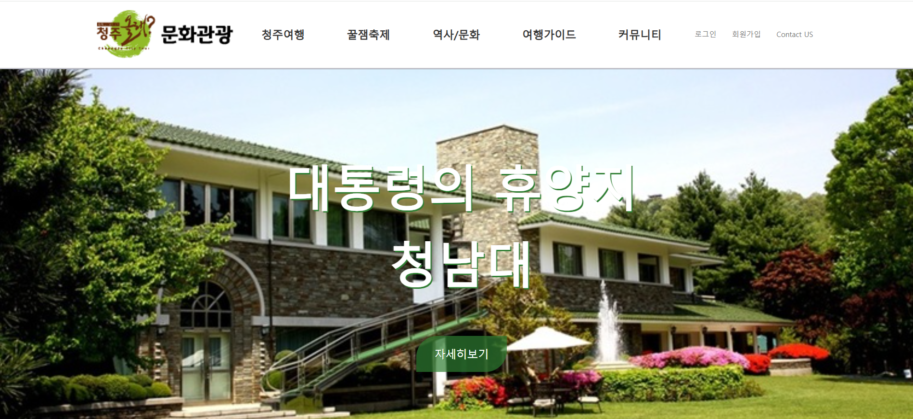
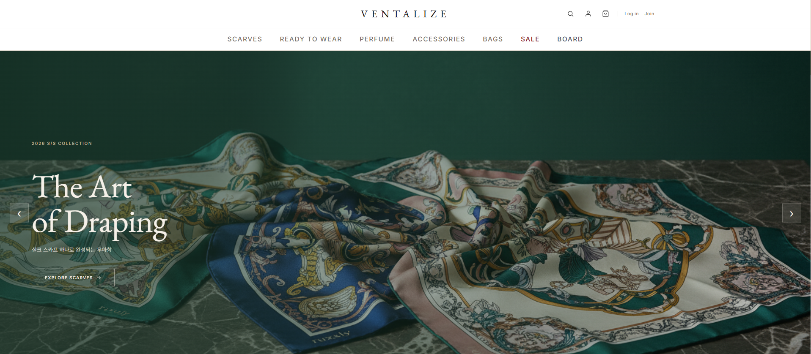
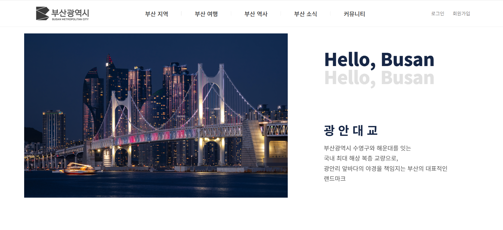
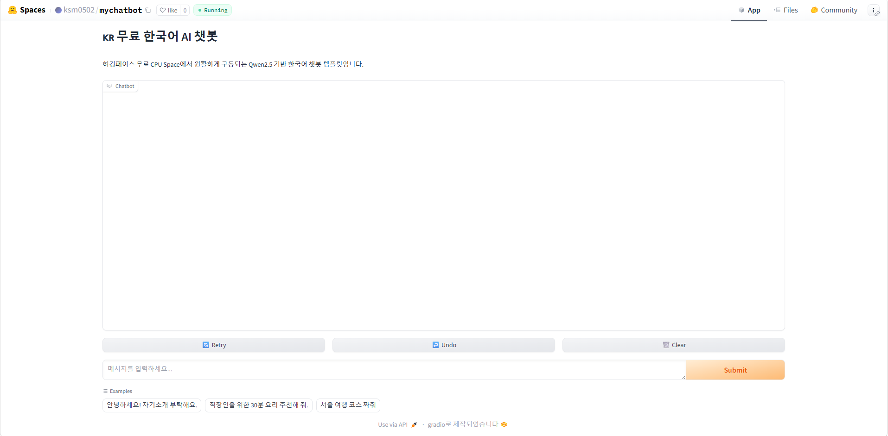

Java와 Spring Boot를 중심으로 REST API와 데이터 처리 서비스를 구현하고, Vue.js 기반 프론트엔드와 연계한 웹 서비스를 개발해왔습니다.
웹 퍼블리싱부터 Vue.js 쇼핑몰, Spring Boot 기반 API 개발,
데이터 연동과 Hugging Face 챗봇 배포까지 단계적으로 경험을 확장했습니다.
웹 퍼블리싱과 Vue.js 기반 화면 구현부터 Spring Boot REST API, PostgreSQL 데이터 처리, JWT 인증/인가, 외부 시스템 연동까지 웹 서비스 개발 경험을 쌓아왔습니다.
Java/Spring을 주력으로 데이터와 API 구조를 설계하고, Vue.js 프론트엔드와 연결되는 전체 서비스 흐름을 이해하고 구현하는 개발자를 지향합니다.
포트폴리오의 기술 스택은 실제 프로젝트에서 사용한 경험을 기준으로 정리했습니다.
Spring Boot 기반 REST API 개발, 계층형 구조 설계, 인증/인가, 예외 처리, Validation을 구현합니다.
PostgreSQL 기반 테이블 설계와 JPA 연관관계 매핑, 도메인별 데이터 분리 저장을 경험했습니다.
외부 분석 서버가 생성한 결과를 백엔드에서 수신·저장·조회하는 연동 흐름을 중심으로 경험했습니다.
Vue.js를 활용한 화면 구현과 Spring Boot REST API 연동을 경험했으며, 프론트엔드와 백엔드가 연결되는 웹 서비스 흐름을 이해하고 있습니다.
외부 분석 결과가 백엔드 API를 거쳐 저장·검토·통계 데이터로 확장되는 흐름을 중심으로 구성했습니다.
프로젝트는 단순 나열이 아니라, 기술을 단계적으로 확장해온 과정으로 정리했습니다.
HTML/CSS 기반 반응형 관광 정보 웹사이트를 구현하며 웹 퍼블리싱과 UI 구조를 학습했습니다.
팀 협업을 통해 관광 정보 화면을 구성하고, 사용자에게 정보를 전달하는 웹 서비스 흐름을 경험했습니다.
Vue.js 기반 쇼핑몰 화면을 구성하며 컴포넌트, 라우팅, API 연동 흐름을 익혔습니다.
Vue 정적 프론트와 Spring Boot, JPA, PostgreSQL 기반 쇼핑몰 API를 구현했습니다.
외부 분석 서버의 결과를 Spring Boot 백엔드에서 수신·저장하고, 상태 관리와 통계 API를 구현했습니다.
FastAPI와 Gradio로 Qwen2.5-1.5B 기반 한국어 챗봇을 구성하고 Hugging Face Spaces에 Docker로 배포했습니다.
팀 프로젝트와 개인 프로젝트를 구분하고, Java / Spring 기반 백엔드 경험과 제가 직접 담당한 역할을 중심으로 정리했습니다.
팀 프로젝트에서 백엔드 담당으로 참여한 핵심 프로젝트입니다.
외부 분석 서버가 전달한 차량 감지 로그, OCR 결과, 과속 위반 데이터를 수집하고
PostgreSQL에 저장하는 Spring Boot 기반 교통 데이터 백엔드 시스템입니다.
팀 프로젝트에서 백엔드 부분을 담당했습니다.
감지 로그 API, OCR 결과 저장 구조, 과속 위반 관리 API, JWT 인증과 Swagger 문서화를 담당했습니다.

직접 설계하고 구현한 프로젝트를 중심으로 정리했습니다.

Vue 정적 프론트와 Spring Boot 백엔드로 구성한 쇼핑몰 프로젝트.
회원, 상품, 장바구니, 주문, 리뷰, 공지/게시판/Q&A API를 구현했습니다.

HTML/CSS 기반 반응형 관광 정보 웹사이트.
공통 내비게이션과 상세 페이지를 구성하며 웹 퍼블리싱을 학습했습니다.
팀 협업, 프론트엔드와 백엔드 연동, 서비스 흐름을 경험한 프로젝트입니다.

Vue.js 기반 럭셔리 패션 쇼핑몰 팀 프로젝트.
상품 탐색부터 장바구니·주문·관리자 화면으로 이어지는 사용자 흐름을 구현했습니다.

팀 협업 기반 관광 정보 웹 프로젝트.
화면 구성과 관광 콘텐츠 UI 구현 경험을 쌓았습니다.
백엔드와 AI 서비스 배포 경험을 확장한 프로젝트입니다.

FastAPI 앱에 Gradio 채팅 UI를 마운트하고,
Transformers와 PyTorch CPU 환경에서 Qwen2.5-1.5B-Instruct 모델을 실행하도록 구성한 한국어 챗봇입니다.
Java/Spring Boot 기반 개발자로 성장하고 있습니다. 채용 문의나 프로젝트 관련 연락을 환영합니다.
✉️Emailsmn1297@gmail.com 🐙GitHubgithub.com/ksm0502